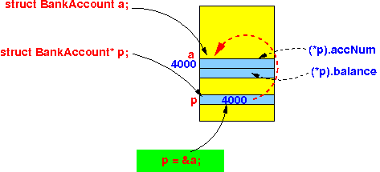
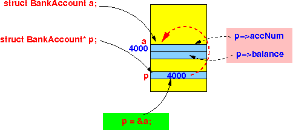
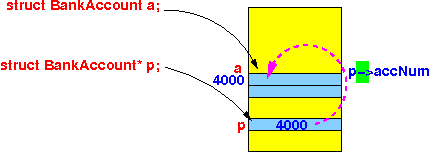

- Syntactical sugar:
- Syntactical sugar =
an programming language construct that
look nice ("sweeter") but
does not add more features
(sugar has no nutritional value...)
Wikipedia page on syntactical sugar: click here
- Syntactical sugar =
an programming language construct that
look nice ("sweeter") but
does not add more features
(sugar has no nutritional value...)
- The C programming language has
a lot of syntactical sugars....
Here a some that you have already learned:
Ordinary way | "Nicer looking" way ----------------+----------------------- i = i + 1 | i++ // The ++ is a new operator !!! i = i - 1 | i-- i = i + 7 | i += 7 .... | ....
- We will now introduce
a very nicely looking
operator
that is used
extremely often by
C programmer when they
use reference variables to
struct typed variables
- Fact:
- C programs often use pointer to structures
Therefore:
- A C program will
often use:
(*p).VarName
This occur so often than C has introduced a short-hand notation !!!
- The -> operator:
- The expression
p->varName // p must be defined as: struct StructName* p ;is a short hand for:
(*p).varName
Illustrated (using the BankAccount struct):
- The original syntax to
access member variables in
a struct
through a pointer variable:
 - p points to a struct variable
- Then: *p is a struct variable
- Therefore: (*p).varName selects a member variable inside a struct variable
- The new syntax to access
member variables
in a struct
through a
pointer variable:
 You can visualize the -> operator as an arrow from the pointer variable to a member variable inside the struct:

- The expression
- Example program:
#include <stdio.h> /* ------------------------ Structure definition ------------------------ */ struct BankAccount { int accNum; double balance; }; struct BankAccount a; int main(int argc, char *argv[]) { struct BankAccount b; struct BankAccount *p; // Reference variable to type "struct BankAccount" p = &a; // Now: *p is alias for a p->accNum = 123; // This statement is equal to: a.accNum = 123; p->balance = 1000.0; // This statement is equal to: a.balance = 1000.0; p = &b; // Now: *p is alias for b p->accNum = 444; // This statement is equal to: b.accNum = 444; p->balance = 9999.0; // This statement is equal to: b.balance = 9999.0; printf("a.accNum = %d a.balance = %f\n", a.accNum, a.balance); printf("b.accNum = %d b.balance = %f\n", b.accNum, b.balance); }
- Example Program:
(Demo above code)

- Prog file: /home/cs255001/demo/C/set2/ref-struct2.c
How to run the program:
- To compile: gcc ref-struct2.c
- To run: ./a.out
- Why
is it called a short hand:
- The expression
(*p).accNum
contains 2 operations:
- * (de-reference operator)
- . (the member selection operator)
- In contrast, the
expression:
p->accNum
contains only 1 operation:
- -> (de-reference plus member selection operator)
- The expression